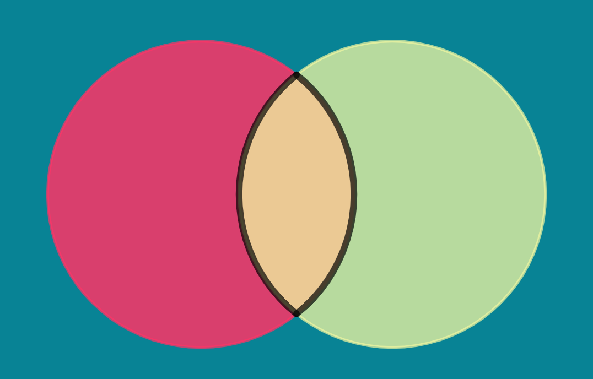
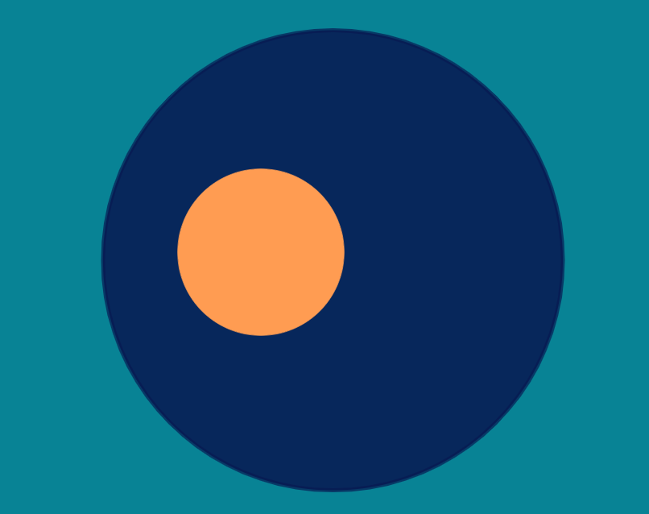
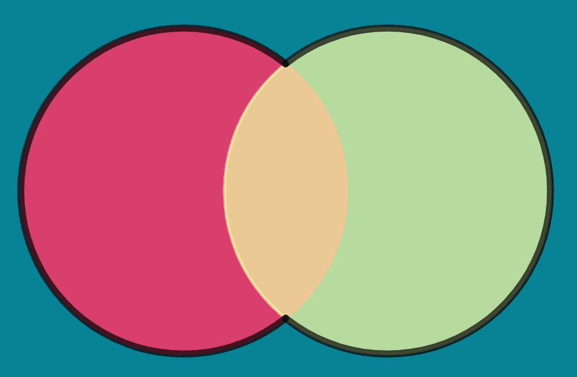
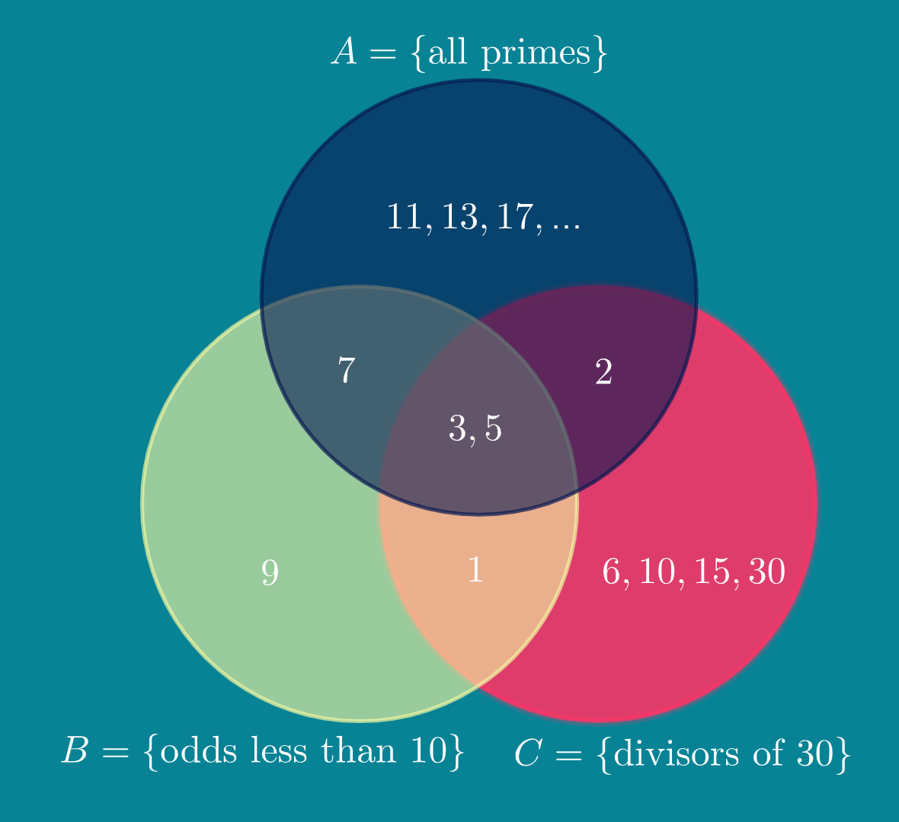
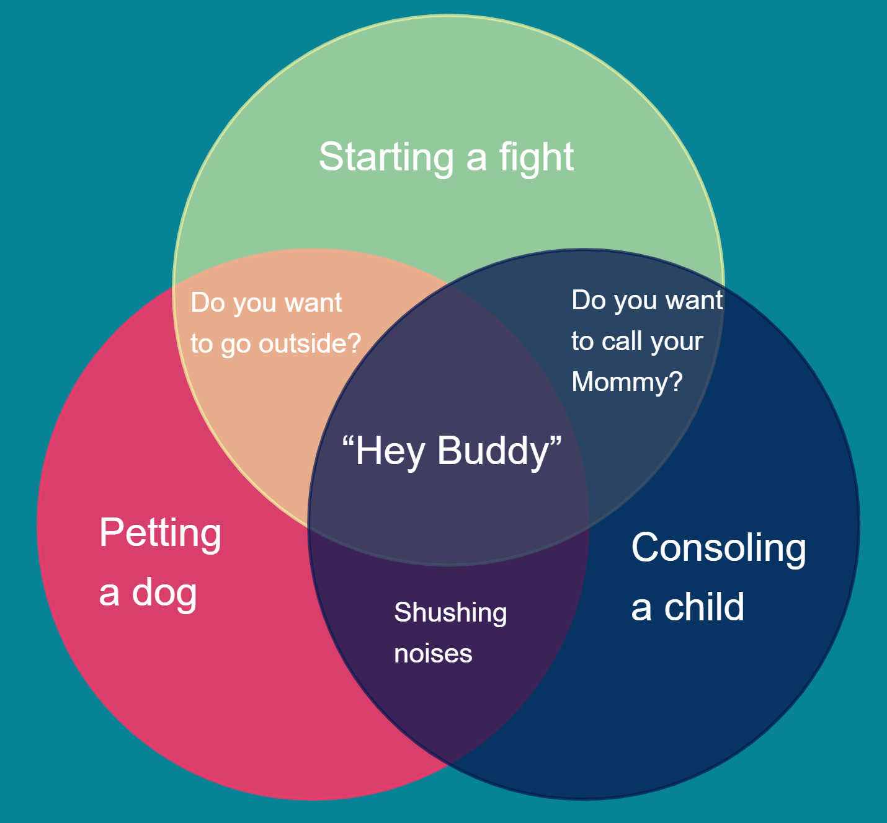
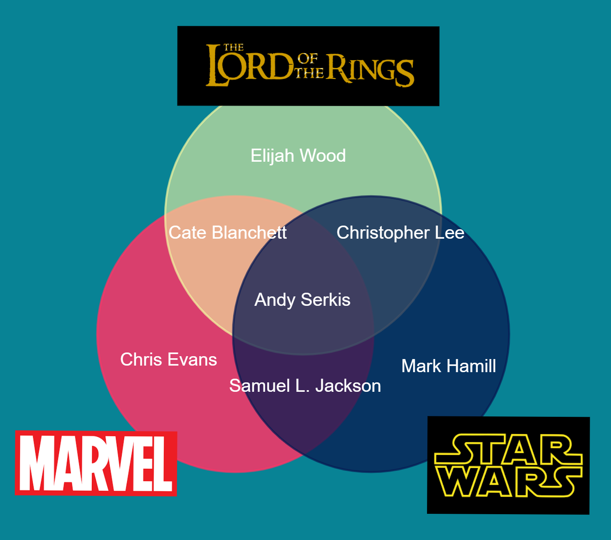

Section 1.4 Shopping Carts and Sets
Sunday afternoon at the local supermarket is a bustling place. Shoppers cut each other off for the last jar of salsa with a smile and a ’pardon me’. Amid the somewhat friendly and mostly competitive crowd, long-time friends Yuri and Kalo bump into each other in front of the cauliflower. It’s always a bit awkward looking into someone else’s shopping cart (feels like a violation of privacy, right?), but Yuri couldn’t help but notice that there was some overlap.
"Hey, I like rice cakes, too. Look!" exclaimed Yuri holding up a bag of rice cakes from his cart.
Anyway... the two carts looked like this:
| Yuri’s cart | Kalo’s cart |
| rice cakes | rice cakes |
| cauliflower | cauliflower |
| halibut | tuna |
| coffee creamer | crab legs |
| spicy ramen | spicy ramen |
| cilantro | parsley |
| yellow onion | purple onion |
| corn chips | cookies |
| salami | bagels |
| eggs | salami |
| cream cheese |
Subsection 1.4.1 Collections of Things
There’s some mathematics going on here. Anytime we find a collection of items (like a shopping cart) we have a mathematical object called a set.
Let’s call the set of Yuri’s cart \(Y\text{,}\) written as \(Y = \) { rice cakes, cauliflower, halibut, coffee creamer, spicy ramen, cilantro, yellow onion, corn chips, salami, eggs } . Similarly \(K = \) {rice cakes, cauliflower, tuna, crab legs, spicy ramen, parsley, purple onion, cookies, bagels, salami, and cream cheese} is the set representing Kalo’s cart. So halibut is an element of \(Y\) (written as halibet \(\in Y\)), and tuna \(\in K\text{.}\)
We could make a list of the items that both Yuri and Kalo have in their carts, and this overlap between their two carts represents the "intersection of Y and K", denoted \(Y \cap K\text{.}\)
Definition 1.4.3.
In general for sets \(A\) and \(B\text{,}\) the intersection of \(A\) and \(B\), \(A \cap B\text{,}\) is the set of elements in both sets.
Question 1.4.5. Yuri and Kalo’s intersection.
What does \(Y \cap K \) contain?
Solution.
\(Y \cap K \) = {rice cakes, cauliflower, spicy ramen, salami}
Another friend interrupts Yuri and Kalo’s meeting. JACOBI greets them both as they unapologetically rifle through his cart.
JACOBI’s cart is represented by the set \(J = \) {spicy ramen, cilantro, corn chips, and eggs}. Yuri can’t help notice that everything in \(J\) is also in \(Y\text{.}\) In this case, we say that \(J\) is a subset of \(Y\text{,}\) denoted \(J \subseteq Y\) or \(Y \supseteq J\text{.}\)
Definition 1.4.6.
A set \(A\) is a subset of \(B\) if for any element \(x \in A\text{,}\) we know also that \(x \in B\text{.}\)

Question 1.4.8. Subsets of Dairy.
Let \(D\) be the set of all dairy items. Find a subset of \(K\) that is also a subset of \(D\text{.}\)
Solution.
The subset we’re looking for must be a set of dairy items in Kalo’s cart: \(D \cap K\text{,}\) for example.
That is, \(D \cap K = \) {cream cheese}.
Question 1.4.9. Is the intersection a subset?
Is \(Y \cap K\) a subset of \(Y\text{?}\)
Solution.
Yes! Any element in \(Y \cap K\) is also an element of \(Y\text{.}\)
Unbeknownst to Kalo, Kalo’s wife MARNIE is also in the grocery store with \(M = \) {cauliflower, macaroni, purple onion, water, bacon}. When Kalo and MARNIE bump into each other, they decide to finish their shopping and to consolidate their items to one cart. Kalo reshelves the cauliflower and purple onion, though, since MARNIE already has those items in her cart. This new cart is known as the "union of K and M", \(K \cup M \text{.}\)
Definition 1.4.10.
In general, for sets \(A\) and \(B\text{,}\) the union of \(A\) and \(B\text{,}\) \(A \cup B\text{,}\) is the collection of elements that are in either set (or both).

Question 1.4.12. Question of union.
What is \(K \cup M\text{?}\)
Question 1.4.13. Another question of union.
What is \(Y \cup J\text{?}\)
Question 1.4.14. More complicated sets.
What about \((Y \cap K) \cup M\text{?}\)
Subsection 1.4.2 An empty cart
After Kalo and Marnie consolidate their carts, somebody snags Kalo’s now empty cart. This makes Kalo consider how an empty cart relates to sets.
Question 1.4.15.
Can a set have 0 elements?
Solution.
Definitely!
Actually, that empty cart is symbolic of a very important set. The empty set is the set with no elements. We denote it as \(\phi\text{.}\)
Question 1.4.16.
Give an example of two sets, \(A\) and \(B\) for which \(A \cap B = \phi\text{.}\)
Solution.
There are millions of examples. For example, let \(A\) be the set of all species of turtles and \(B\) be the set of flying creatures. Come up with your on example.
Subsection 1.4.3 Venn Diagrams
A common way to picture sets and how they interact is with overlapping circles. You have already seen a few such images in this section. We call these figures Venn diagrams, named after mathematician John Venn (1834-1923), and they help us quickly recognize how given sets are related.
For example, consider the sets \(A = \{\text{all primes}\}\text{,}\) \(B = \{\text{odds less than} 10\}\text{,}\) and \(C = \{\text{divisors of }\}30\text{.}\) Are sets such as \(A \cap B\) or \(B \cup C\) obvious? The Venn diagram makes these relationships obvious.

Question 1.4.18.
Use the Venn diagram to provide \(A \cap B \cap C\text{.}\)
Solution.
We can see \(A \cap B \cap C = \{3,5\}\text{.}\)
It’s also fairly common to find Venn diagram memes. You should do a quick internet search to see for yourself.

How about we look at sets of actors from popular movie franchises?

Remark 1.4.21. More sets later.
Remember that our goal is to introduce you to topics you’ll cover in more detail later. There are other set operations that we won’t cover here. You’ll see these in classes like Discrete Mathematics, Modern Algebra, and many others.Subsection 1.4.4 Set Activities
Activity 1.4.1. Human Venn Diagrams.
Your class will now be a human Venn diagram (This works best in an open area). Each of you will receive an idex card. On your index card, write (1) an integer, (2) a color, and (3) an animal.
For example, your card may include
- 73
- tangerine
- pangolin.
Your instructor will designate one part of the room (or area) for set \(A\text{,}\) another for set \(B\text{,}\) and a third area for set \(C\text{.}\)
Now for the game. Your instructor will call out (or write on the board) what the three sets represent. At that point, you must move to the location on the Venn diagram that fits your card.
For example, suppose your instructor calls out (or writes) "\(A\) is the set even integers, \(B\) is the set of warm colors (yellows, oranges, reds), and \(C\) is the set of predatory animals. Compare those sets to your card. It appears \(C\) is the only set you are a part of, so move on to that section of the Venn diagram. The quicker, the better.

Play a few rounds.
Activity 1.4.2. Crafting Sets.
For this activity, the class will be divided groups. The instructor will give either an element or a set of elements as well as a set operator (either union or intersection). The group is challenged to find two sets whose union or intersection (whichever is specified) is the given element or subset.
For example, suppose your instructor says "\(\{3,5,6,9,10,12,15,\ldots \}\) \text{ and } \(\cup\)". Your group could let \(A = \{\text{ multiples of }3\}\) and \(B = \{\text{ multiples of }5\}\) since \(A \cup B = \{3,5,6,9,10,12,15,\ldots \}\text{.}\)